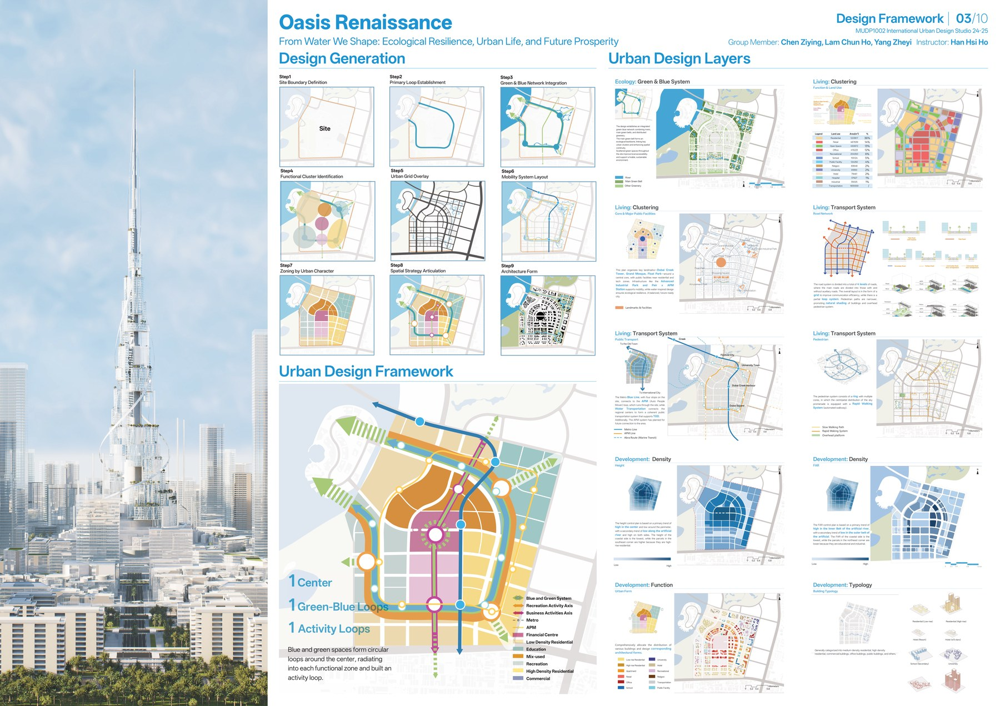
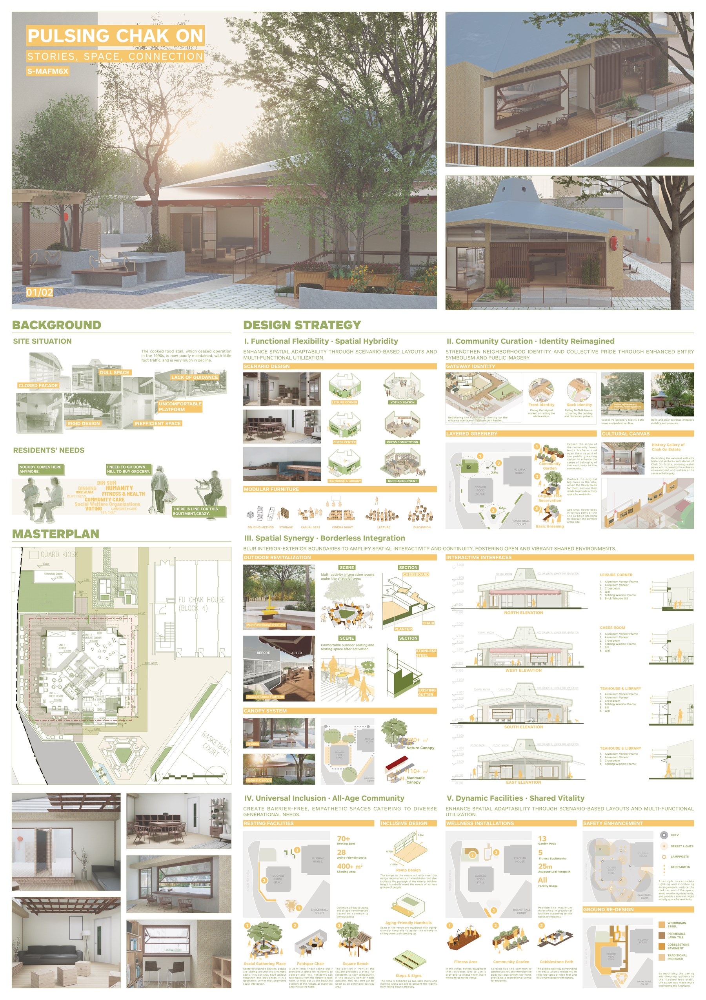

Hong Kong · Greater Bay Area
Planning cities with evidence, designing them for people.
我是林圳豪 Hudson，一名結合空間分析、政策研究與社區設計的城市規劃者。 我的工作從北部都會區策略研究，延伸至公共住房、低排放區評估與公共空間更新。
01 · Selected work
Four projects, four ways of making an impact.
精選項目以問題、方法、個人貢獻與成果為核心。點擊案例可查看水印作品預覽。

Urban design · DubaiCase 01 / Regional resilience
Oasis Renaissance
將 Dubai Creek Harbor 的高密度開發，轉化為由藍綠網絡與公共生活驅動的韌性城區。
- Challenge
- 水文壓力、熱環境與斷裂的濱水公共界面
- Contribution
- 整合區域水系、交通組織、開放空間與街區設計語言
- Methods
- Urban design · Blue-green network · Phasing

Champion · HKHACase 02 / Community renewal
Well-being Chak On
以模組家具、活動平台與清晰導向，重新激活屋邨內低使用率的公共空間。
- Contribution
- 主導社區更新方案設計，與香港房屋委員會協作推進落地
- Outcome
- Design competition champion
 Policy research · Madrid
Policy research · Madrid
Case 03 / Policy evaluation
Madrid LEZ Co-benefits
評估低排放區對行人安全與城市活力的共同效益，讓政策影響變得可驗證。
- Methods
- Difference-in-Difference · Spatial analysis · Policy evaluation
- Outcome
- Manuscript under peer review at Cities
 Strategic planning · Hong Kong
Strategic planning · Hong Kong
Case 04 / Northern Metropolis
San Tin Technopole Baseline Review
從產業、跨境協同、人才社群與碳中和出發，建立創科新城的策略規劃基礎。
- Scale
- 515-hectare strategic planning study
- Methods
- Baseline review · Spatial strategy · Scenario planning
02 · Profile
Research rigour.
Design sensitivity.
Public purpose.

我關注城市空間網絡與政策如何塑造日常生活，並以規劃研究和設計把複雜問題轉化為可行動的策略。
Urban Planning Assistant · Local Think Tank
Northern Metropolis restructuring strategy and technical planning work.
Student Research Assistant · HKU DUPAD
Public housing accessibility networks and transport-policy co-benefits.
MSc Urban Planning · HKU
Current student; HKIP and RTPI student member.
Master of Urban Design · HKU
Graduated with Distinction.
Spatial analysisPolicy evaluationUrban design
Strategic planningCommunity engagementTechnical drawing
03 · Project archive
More work across scales.
由濱水公共空間、競賽提案到本科城市設計訓練。
04 · Beyond planning
Leadership begins with care.
在重慶大學期間，我創立並領導 Meow Society，組織校園流浪動物照護、救助、領養與倡議。這段經驗讓我相信，城市工作的尺度再大，最終仍關乎誰被看見、誰被照顧。


Available for opportunities in Hong Kong
Let’s shape better cities together.
Open to Urban Planner, Urban Designer, Urban Manager, and research opportunities.